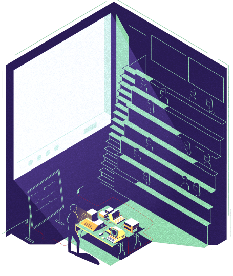
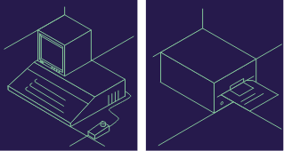

Subscribe to the podcast to receive new episodes as soon as we release them

Steve Wozniak (aka Woz) has had a tremendous effect on the world of hardware. Season 4 features many of the devices he’s designed, built, worked on, and been inspired by. But for Woz, what’s most important isn’t necessarily the devices he’s created—it’s how he built them.
Woz recounts how his early tinkering led to a lifelong passion for engineering. He started learning about computers on a GE 225 in high school. Soon enough, he was designing improvements to computers he wanted to buy—eventually defining his mantra for simplicity in design. That philosophy helped him finish the Apple I after seeing the Altair 8800 at the Homebrew Computer Club, and to create the floppy drive for the Apple II. But what he’s proudest of these days is the recognition for his engineering accomplishments—and sharing them with the world.
00:01 - Saron Yitbarek
Hello, I'm Saron Yitbarek, host of Command Line Heroes, an original podcast from Red Hat. This season, our fourth season, if you're counting, we took you on a historical journey into the world of hardware and the teams who dare to change the rules to make them. From the Eagle minicomputer to the GE-225 mainframe, the Altair 8800 to the floppy disk, the PalmPilot to the Sega Dreamcast, machines that are now obsolete and largely forgotten, but they all paved the way to the hardware of today and how we've evolved as developers.
00:44 - Saron Yitbarek
Along the way, these machines changed the course of computing history by inspiring the personal computer revolution, the open source software movement, and the open source hardware movement. But before we close the doors on Season 4, there's one more thing.
01:03 - Steve Wozniak
I'm Steve Wozniak, co-founder of Apple Computer. Glad to talk to you.
01:08 - Saron Yitbarek
If you recall from many of our episodes this season, Steve Wozniak's name came up not once, not twice, but on several occasions. That's because the Woz, as he's affectionately known, not only lived that history, but he was instrumental in it. This very special command line hero sat down with us to talk about his lived experience in the annals of hardware. We started by asking him about the first piece of hardware he ever fell in love with.
01:42 - Steve Wozniak
When I was very, very young, maybe 10 years old, I fell in love with a transistor radio, and for years I would sleep with it playing music by the side of my head then. So that was kind of a first one, but there were a lot of other steps in there. There were science fair projects that I did that were just hundreds of .incredible parts. Now, when if you get down to computerish stuff, command line stuff, I somehow discovered when I was 10 years old, a manual that talked about logic, digital logic, and I would play games on paper with it. And I said, "Computers are going to be the love of my life."
02:19 - Saron Yitbarek
In the 1960s, when he was still in high school, Steve Wozniak had an opportunity to try out a time-sharing system via a teletype terminal that GE brought into his school. It was the same system we talked about in episode 2 when we featured the GE-225 mainframe.
02:37 - Steve Wozniak
There were no books, no magazines. You couldn't find out “What is a computer?” And in high school, I got permission to go ... I guess I did, a gadget we had for just a few days, it was a test. It was a teletype connected to a time-sharing system to run some programs in BASIC. And so I did a few things and I said, "Well, this BASIC is kind of neat."
02:58 - Saron Yitbarek
In his last high school year, Wozniak's electronics teacher arranged for him to go to Sylvania, a local company in Sunnyvale, California, to learn how to program their computer.
03:10 - Steve Wozniak
My electronics teacher got me to go down to a company and program once a week in Fortran on an IBM 1170, I think was the computer number. And I didn't see its architecture yet. But while I was down there one day, I saw a book on a desk, an engineer's desk, called The Small Computer Handbook, describing the PDP-8 minicomputer.
03:33 - Saron Yitbarek
In episode 1, we featured the story told in the book, The Soul of a New Machine, about how Data General's minicomputer, the Eagle, went up against Digital Equipment Corporation's VAX minicomputer. The PDP-8 was a precursor to the VAX and DEC's first commercially successful minicomputer.
03:53 - Steve Wozniak
They let me have the manual. They gave it to me. I took it home and I studied it. My gosh, it had all the little registers at what different ones and zeroes mean, what instructions they mean, how the data is stored in memory. Oh, my gosh. So I started sitting down on paper saying, "I wonder if I could design a computer." And that was a big start for me. And I got this brochure. I would order brochures to get the parts. How could you ever get a hold of a computer company? How could you get their address?
04:19 - Steve Wozniak
Stanford Linear Accelerator Center, I would drive down, and the smartest people in the world don't lock doors. I'd go on a Sunday, I'd go into their main building and just walk around. And I found the library on the second floor, and I'd sit down, and there were computer journals and magazines, and they had little cards you could order manuals from. So I ordered the Data General manual, and it came kind of showing the big, established names of the president and the head of operations and the head of software and engineering. Wow. And you know, but it wasn't what I want.
04:51 - Steve Wozniak
I want the guts of ones and zeroes. On the last page, it showed that they had one instruction, one arithmetic instruction. I was used to like—every computer came out with 56 instructions. One instruction, and little bits had individual, small meanings. One bit might mean set the carry before the addition. Another bit, three bits might mean do you add, subtract, or exclusive or, and some other operations. And then another bit said, do you complement the result and do you shift the result? And do you shift the carry in? Wait a minute. Each bit had an individual meaning.
05:21 - Steve Wozniak
When I finally sat down to design that computer, I was designing computers every weekend, minicomputers as they came out. I sat down to design it, and every time they had one bit with one meaning, that bit was a wire that ran to the chip that did exactly that thing, and it wound up with about half as many chips as all my other minicomputer designs, and it was just as good. I had posters of that computer on my wall that they shipped with their brochure. One was of it in a rack, like normal computerish stuff, you know, because it was front panel, switches for ones and zeroes, lights for ones and zeroes, all that geeky stuff.
05:54 - Steve Wozniak
But they had another picture that was like a desktop version sitting on a tabletop. How could you ever imagine a computer on a tabletop? Caught my attention. And I decided, I also told my dad, I fell in love with it so much. I told my father, "Someday I'm going to own a 4K Data General Nova computer." Why 4K? You need 4K to run a language like Fortran, which I'd programmed in, or ALGOL or PL/I, any programming language needed 4K. I had never programmed in BASIC, so I told my dad that, and he said it costs as much as a house, and I said, "I'll live in an apartment." I had made up my mind then and there. I was going to have a computer that I could actually use. Even though I'm going to toggle in ones and zeroes all day and push a button to get it into memory, that's what I wanted in my life more than even a home.
06:42 - Saron Yitbarek
Data General's 16-bit Nova minicomputer was a precursor to the 32-bit Eclipse, code-named Eagle from episode 1. In fact, the Nova minicomputer inspired Woz's engineering design philosophy.
06:59 - Steve Wozniak
This computer taught me, you should always architect things to use the parts that are available to have the least structure and the fewest parts. That was something I became very good at. I'd been working and working at designs, always trying to get fewer and fewer chips, and if you design it around chips that already exist, you can use much fewer parts and much cleaner, much less work, in a sense, to understand it. And that became my mantra for design. Always seek simple, straightforward, easily understood, and don't complicate it by coming up with something you want to build and then wind up putting 20 chips together to kind of do the right functions and get the right signals on wires. No, look for the simple, direct approach.
07:39 - Saron Yitbarek
Woz's design philosophy reminds me of the Zen of Palm, Palm's approach to building apps, which we talked about on episode 5: Make it simple.
07:51 - Saron Yitbarek
Remember in episode 3 when we talked about the Altair 8800 and the birth of the personal computer? Steve Wozniak had been working on his own version during that time when he went to that fateful first meeting of the Homebrew Computer Club.
08:07 - Steve Wozniak
I was showing all these designs of video games like Atari games, and I even designed Breakout for Atari, and I saw the ARPANET. That's the forerunner of today's internet, but it started out with like five or six computers spread all across the country. I saw somebody on that, and I knew how to design anything by then. And to use my TV as output, I had done that for video games. So I sat down and built a little terminal with a keyboard that costs 60 bucks. Way back then, that was the most expensive part of any of these things. I had a keyboard and a video display, and I could, over the phone line, contact the ARPANET and go on with very slow texting for very slow over phone line modems in those days, and I could type to a computer in Boston that could type back to me. And I could switch over to a computer at UCLA, and then I could read files and I could run programs. This was so incredible.
08:57 - Steve Wozniak
I heard a club was starting. It did not have a name—it was just tech enthusiasts—and I thought, "Oh, my gosh. I'll show off. I have this little design. Nobody knows you can use your own TV that you own. I'll go and show off my design and give it away, and I'll be a hero." I went down to the club, and everybody was talking about this thing called the Altair. It had been on the front of Popular Electronics. I didn't know about it. There were people that had gone and visited the company at the club. They were all talking about now you can buy a computer for $400. It was a machine with only 256 bytes of RAM for that price, and it used static RAM. All it was, was an Intel datasheet, Intel microprocessor, with Intel showing you exactly connected this way to these switches and these lights, and then you could have a little system to punch in ones and zeroes.
09:39 - Steve Wozniak
I had designed and built my own computer out of chips I got five years before that. I'd been there and done that. I knew exactly what these people were looking at, and 400 bucks was affordable by a human. They had to design it around static memories, the most expensive part of any computer. That's why it only had 256 bytes of memory. But if you had to put up like 4K of memory to have a programming language, those static memories cost so much. It was just out of the range of any normal human, so we wouldn't have even considered it was a computer that could do useful things. What's a useful thing? Have a problem, type in a program, solve the problem.
10:14 - Steve Wozniak
And now, I'm sitting there thinking. I'm working at Hewlett-Packard on calculators that work with humans, and I have my little machine that can talk to a computer far away on the ARPANET. I said, "Wait a minute." I discovered the price of microprocessors had finally come down. The Intel one was $400. I could not afford that. For a single microprocessor, that's what the Altair was based on: Intel. And then as an HP employee, I could buy a Motorola 6800 for $40. Whoa. So I designed my computer to put a microprocessor and memory. Not expensive static memory that you can't afford, 32 chips worth. Just eight chips of dynamic memory and then five other chips to help cycle it and make it not forget its data. It's called refreshing.
10:56 - Steve Wozniak
So I designed that computer around the 6800 from Motorola, and then a company introduced the 6502 microprocessor at a show in San Francisco and, oh, I bought that microprocessor, you know, and I knew—the whole formula was in my head. I'd have my own computer very soon. And I did.
11:17 - Saron Yitbarek
Woz wasn't a big fan of the BASIC language. But with the introduction of Altair BASIC, the start of Microsoft software business, he realized Bill Gates and Paul Allen's version of BASIC would become widespread.
11:31 - Steve Wozniak
Now the Altair, once it was out in our club, we knew very well. Bill Gates and Paul Allen had developed a BASIC for it. And I sniffed the wind. The key to computers in the home was going to not be what computers were used for traditionally, which was inventory levels, sales figures, employment, all the stuff big companies did with mainframes. No, it was going to be games. The key to it was games. And the key was BASIC. I had programmed in Fortran, ALGOL, and PL/I, and some assembly languages, the scientific languages. I had never touched BASIC in my life except for those three days in high school because it was a kid's language kind of.
12:08 - Steve Wozniak
It wasn't really the language we scientists use, and I said, "Gotta have BASIC on this machine." And the trouble is I had no one else working with me. I mean, I not only developed the hardware, I had to write the BASIC language. I'd never taken a course in writing languages, so I wrote my own BASIC. I went into Hewlett-Packard at night where I worked, and I opened up the BASIC manual, and I started making notes on paper what all the commands were in BASIC. I didn't realize that BASIC was not BASIC—that the BASIC that digital equipment used that was in all the books and Bill Gates had programmed was totally a different language in how they handled strings of characters, words.
12:45 - Steve Wozniak
They handled words totally different than Hewlett-Packard. I just thought if you write a BASIC, you make your own computer running BASIC, it's the same everywhere. No, it wasn't. So that was a key of the Altair was realizing that now you have to have a language, and the language is BASIC or people won't want it in their homes.
13:03 - Saron Yitbarek
In episode 4, we learned how the floppy disk came to be, but this portable storage method only became ubiquitous with the invention of the Apple II's disk drive. Steve Wozniak created this beautiful piece of hardware in a high pressure, two-week time frame. Here's his story.
13:25 - Steve Wozniak
An issue came up at Apple actually. What we started out with was an Apple II computer with cassette tapes. That means you manually, if you wanted a certain program, you search through the cassette tape, found that program, put it in a tape player and read it into your computer. It wasn't like you could type “run checkbook” to run a checkbook program. I wanted to get to that level someday, and we had a staff meeting, and they were going to allow ... Apple, since we were less than a year old ... Apple, Commodore, and Radio Shack, three personal computer companies, into the CES show in Las Vegas, Nevada.
14:00 - Steve Wozniak
Wow. I had never seen Las Vegas except in movies. I wanted to go there, and in our staff meeting it was said, "Well, we're only going to send three marketing people." Mike Markkula, who ran marketing and was our investor, equal stock owner to me and Steve Jobs. Steve Jobs would go, and our sales guy, Gene Carter, would go. And I was thinking, I'm just too shy to say, "Hey, I'm a founder. Let me go see Las Vegas. Pay for me to go." So I raised my hand. I don't know why I did this. The show was in two weeks. I said, "If we have a floppy disk, can we show it?" Mike Markkula said, "Yes," and my wheels are spinning. He was the adult in the company. My wheels are spinning in the back of my head.
14:38 - Steve Wozniak
If I can develop a floppy disk, not knowing a thing about disks, hardware or software, if I can do it in two weeks to where you can say “run checkbook,” they'll have to take me to Vegas. If they're going to show the floppy disk, they'll have to take me. I worked every single day, day and night, New Year's Day, Christmas Day, every day I worked on it.
14:59 - Steve Wozniak
I first looked at the Shugart five-inch floppy disk. I looked at it, and I sort of reverse engineered it in my head, and I took everything apart and I said, "All it needs is chunks of data, zeroes and ones, four microseconds each. I can supply that from my computer with one wire." So I took out all the Shugart digital chips, all the ones that would step tracks, track to track to track with what's called stepping motor, had phases, A, B, C, D, and every other phase. A would be a track one, and then you go B-C, and now you're on track two. And you go D-A again, you're on track three. I stripped out 20 of their chips to begin with, and then I said, "I'm just going to have the minimum circuits I can."
15:36 - Steve Wozniak
I came up with, in the end, seven little $1 chips, and I could write those data bits out four microseconds at a time to meet the specs of the floppy disk. And my computer could do the software to figure out what ones and zeroes I had to send that equaled ones and zeroes in a different coded data form. But the more difficult thing was, then I got it to where I could write it, and I could look with an oscilloscope and see the data going up and down, but I don't know where any of it starts and stops. Now I have to read it.
16:04 - Steve Wozniak
To read it, you have one bit coming in, and what you can do is you can wait ... it's going to switch in either four or eight microseconds, so around six microseconds, you could build in little timers and say, "Did the signal go from up to down or down to up in those periods?" It would have taken me so many chips, 10 to 20 chips, who knows, with timers in there to determine when is it really making the decision to flip. And then I said, "I've got a little seven megahertz clock, and I'll make what's called a state machine." I'd had a state machine course in my third year of college, and a state machine basically has an address that says where I am now, or a state number, and I just think of addresses into a little ROM chip, a little 256 by 8 ROM chip that was available now.
16:48 - Steve Wozniak
I'll put an address in that's at state. That's where it is now in deciding things, and in comes this one bit that's coming from the read head of the floppy. I'll put that one read bit in, and then the ROM decides here's what my next state will be, and then here comes the bits the next day. And I could flip it—28 of those cycles at seven megahertz equals a four-microsecond stretch, and I could just have it go to stage one, stage two, stage three, stage 28, and then eventually around stage 40 or something, it makes a decision. Did I get a pulse or not? I'll shift a zero or I'll shift a one into the register that goes to the computer.
17:23 - Steve Wozniak
This whole thing was two chips just to read all that data. I look back, I do not know where the magic was pouring out of my head in those days. I just looked at what's the problem, what is the absolute minimum number of parts to do that job and not how it's ever ... because I'd never known how it was done before. I had a high school programmer, Randy Wigginton, working on this with me all those days too. When I got all done, I said, "Why are the other boards so big that they sell for Altair and the S-100 computers?"
17:51 - Steve Wozniak
And I pulled out, I think it was a North Star eight-inch floppy disk or something. I looked at their board, and it had like 50 chips on it. I only had eight on mine, and I could handle two floppy drives. And it worked. We introduced it at the show. I got to see Las Vegas, I got to teach my high school friend Randy how to play craps, and he won 35 bucks, and that was a big, important difference. To be able to run a program is a huge step for a user.
18:21 - Saron Yitbarek
In episode 6, we learned about a whole new generation of makers, the people behind the open source hardware movement. This movement has been compared to the Homebrew Computer Club and all the collaboration and innovation that was going on then. We asked Woz what he thinks of the creativity and openness being generated in hardware again.
18:44 - Steve Wozniak
Well, I believe in it. And you should always make things and share what you have and make it possible for others to use their own skills and experience and expand on it and do something new and more than you had even thought of originally and apply it to a lot of different applications in the world. Not just one tiny one that you understand. No, I'm totally for that. And a lot of the embedded processors now, these tiny little processors, here's a guy who actually built a business card, as thin as a business card with a little flat chip on it, you know barely, and it plugs into USB. For $2 he builds it, and it's a full Linux computer.
19:17 - Steve Wozniak
These things are just so exciting. I built a little a PDP-8 kit, PiDP-8 they call it. The Raspberry Pi is the computer, and the kit is just all the lights and switches for the old PDP-8 minicomputer, and it can run some PDP-8 programs from back then. Only has 4K of memory maximum, and it's how do you connect it to something. The processor is now software inside of a Raspberry Pi. And now you can connect Raspberry Pi to sensors and output devices, and people will want to experiment and explore.
19:52 - Steve Wozniak
Going back to building some of the retro computers sure teaches you how hardware connects to hardware and how to hook it up and how to do more things with it. What can I do that hasn't been done yet? A little bit differently maybe. That's what I love. The independent person, usually a student. I want to learn, I want to try something. It doesn't have any value in life. I look back to a series of projects, maybe 10 or 15 projects where they didn't have any value. They were just fun things I thought of at the time: "Maybe I can do this. I'll try putting this together. I'll build this up." If you know how a chip is constructed inside, you could figure out how the whole circuit is going to work.
20:28 - Saron Yitbarek
As one of the founders of Apple, Steve Wozniak is an icon of modern technology. But for him, success isn't about fame. What's most important is being seen for his work, and that work starts at the command line.
20:45 - Steve Wozniak
All my life, even before Apple, I was doing a lot of projects on the side for companies, electronic projects like the first hotel movie system ever, timecodes for the one-inch tape reels that television stations used. I was doing all the circuits, and I was always proud of my engineering. I wanted other engineers to look at my work, as an engineer could see things that a normal person can't. Not what it does, how it's built. And I wanted them to look at it and “Whoa” and be amazed at my engineering skills.
21:14 - Steve Wozniak
Recently, I got an IEEE fellowship. That's the highest electrical engineering kind of acknowledgement by other engineers you can get in your life. I mean, it just almost brings tears to me. That's what I wanted. Not to start a company, not to start an industry as much as I wanted to be known as a great engineer. Now engineers can see what I did. They see the effects of it, but they can't look at my schematics and my code and say, "How did you do that code?"
21:41 - Steve Wozniak
It is one of the most meaningful awards I've ever gotten in my life. Because that's what I always wanted. And nobody knows that. Everybody thinks, "Oh, my first computer was an Apple II, and I did this and that on it and ran these programs at school and wow, and you designed it." That's cool. But they aren't looking from the engineering point of view.
21:58 - Saron Yitbarek
Thank you, Steve Wozniak, for joining us on Command Line Heroes. Before I close out the season, I'd like to bring on another special guest to tell you about season 5.
22:10 - Clive Thompson
I'm Clive Thompson, author of the book, Coders. I'll be Saron's fireside guests during season 5, all about the career life of developers. Don't miss it.
22:21 - Saron Yitbarek
Command Line Heroes is an original podcast from Red Hat. Go to redhat.com/commandlineheroes to check out all our great research on the hardware you heard about this past season. I'm Saron Yitbarek and ...
22:34 - Steve Wozniak
I'm Steve Wozniak. Keep on coding.
Steve Wozniak
For more than thirty years, Steve Wozniak has helped shape the computing industry. His early contributions include designing Apple’s first line of products: the Apple I and II. He helped found the Electronic Frontier Foundation, and was a founding sponsor of the Tech Museum, the Silicon Valley Ballet, and the Children’s Discovery Museum of San Jose. In 2017, he co-founded Woz U.
Get the newsletter
After each episode drops, we'll send you commentary from the Command Line Heroes team, as well as links that help you take a closer look at the topics we cover. It's as simple as that.
Presented by Red Hat
For 25 years, Red Hat has been bringing open source technologies to the enterprise. From the operating system to containers, we believe in building better technology together–and celebrating the unsung heroes who are remaking our world from the command line up.